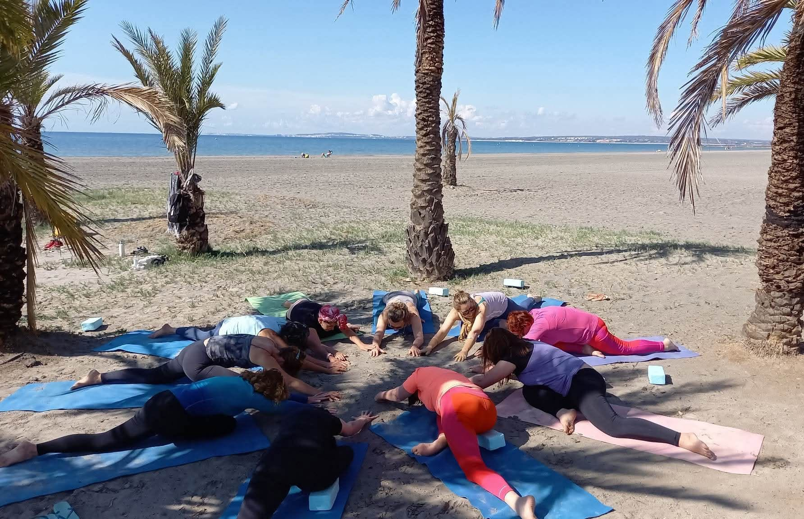
01 · YOGA
Hatha Yoga
Posturas y respiración a un ritmo que permite observar el movimiento, la estabilidad y las sensaciones del cuerpo.
Consulta disponibilidad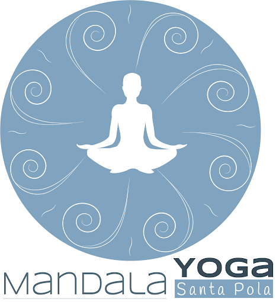
Reservar claseMANDALA YOGA · SANTA POLA
Un espacio frente al mar para moverte, respirar y dedicarte un momento. Descubre las prácticas de Mandala Yoga Santa Pola.
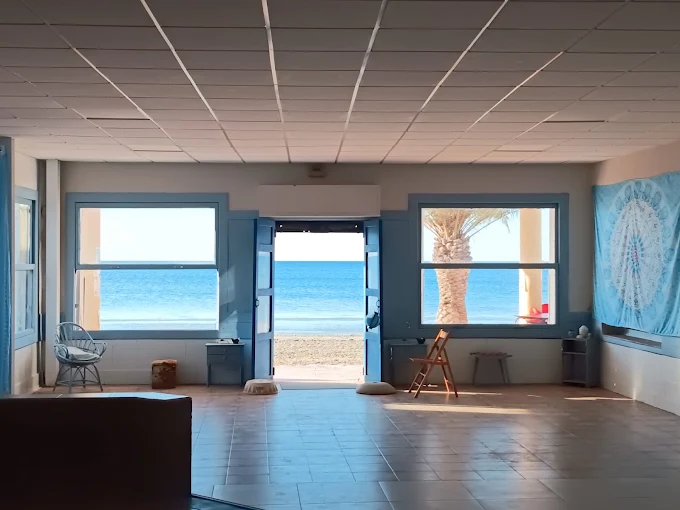
EL ESPACIO
El centro Mandala Yoga se encuentra junto a la playa de Santa Pola. La práctica te ayuda a escuchar tu cuerpo y a hacer una pausa en la rutina diaria.
La práctica puede ser un punto de partida para quienes se acercan por primera vez al yoga o una forma de dar continuidad a una rutina personal. Cada sesión ofrece un espacio propio para moverse, respirar y bajar el ritmo.
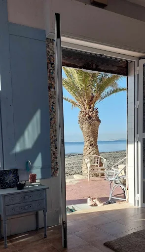
PRÁCTICAS

Posturas y respiración a un ritmo que permite observar el movimiento, la estabilidad y las sensaciones del cuerpo.
Consulta disponibilidad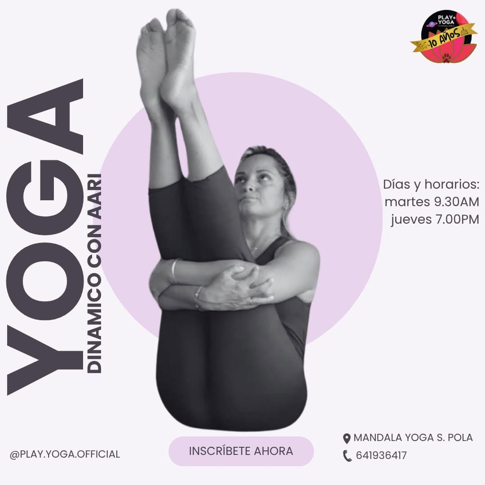
Secuencias más fluidas en las que la respiración acompaña el paso de una postura a otra. Consulta las clases actuales.
Consulta disponibilidad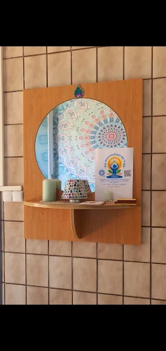
Movimientos suaves y atención al cuerpo. Esta disciplina aparece en el horario compartido por el centro; confirma las sesiones actuales.
Consulta disponibilidadMOVIMIENTO · RESPIRACIÓN · EQUILIBRIO
En Santa Pola, cerca del Mediterráneo, Mandala Yoga te ofrece la oportunidad de detenerte un momento y dedicar tiempo al movimiento. Hay prácticas de distintos ritmos: en unas permaneces en una postura y observas la respiración; en otras, los movimientos fluyen de uno a otro.
El Hatha Yoga combina posturas, respiración y concentración. Su ritmo más pausado ayuda a observar la postura corporal y las transiciones, tanto si acabas de empezar como si practicas habitualmente. Algunas personas buscan mejorar su movilidad; otras, soltar la tensión del día o simplemente encontrar un momento de calma.
En el centro también se puede practicar Tai-Chi. Sus movimientos lentos y precisos, enlazados entre sí, trabajan la coordinación, el equilibrio y la continuidad. Mientras el Hatha Yoga invita a profundizar en las posturas, el Tai-Chi pone el acento en la fluidez del movimiento.
El Vinyasa es una forma de yoga más dinámica en la que la respiración acompaña las transiciones entre posturas.
EL CENTRO EN IMÁGENES
Una mirada al entorno, al espacio y a las prácticas compartidas por Mandala Yoga Santa Pola.
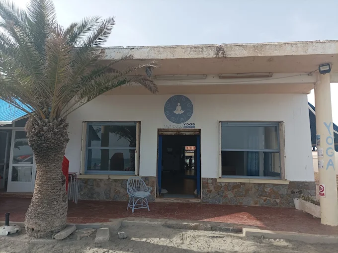
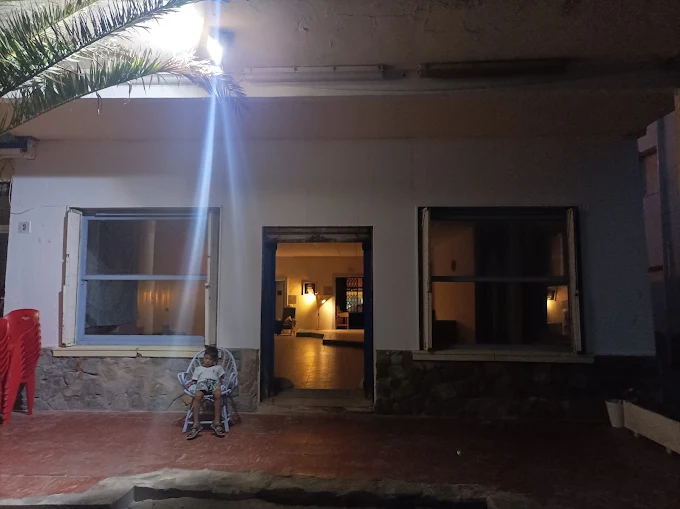
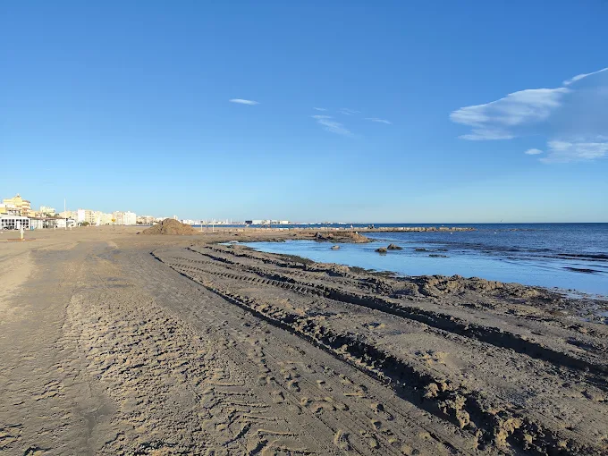
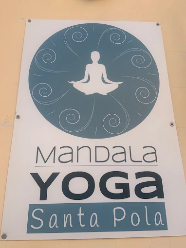
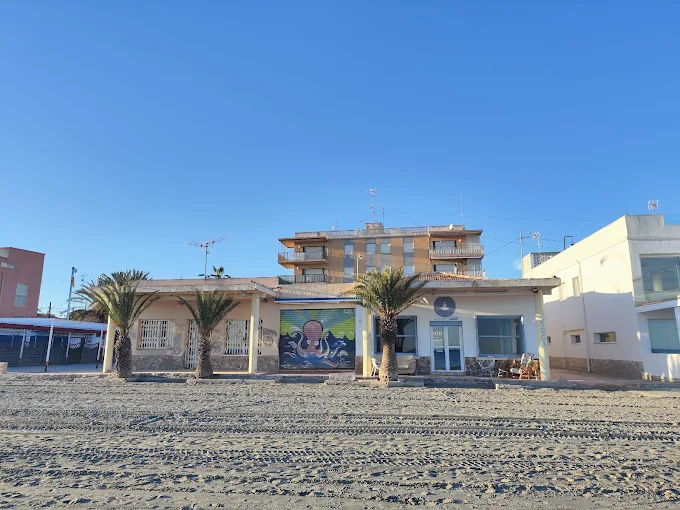
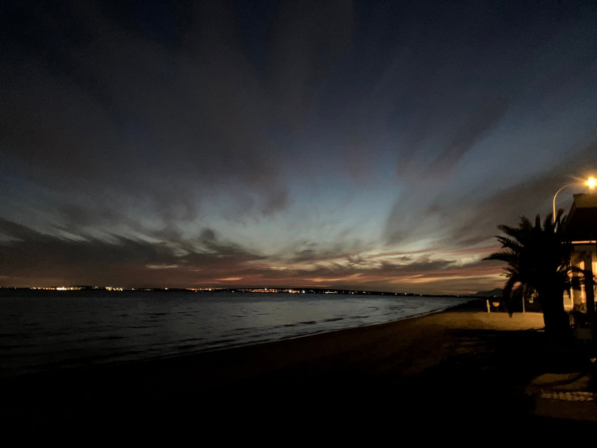
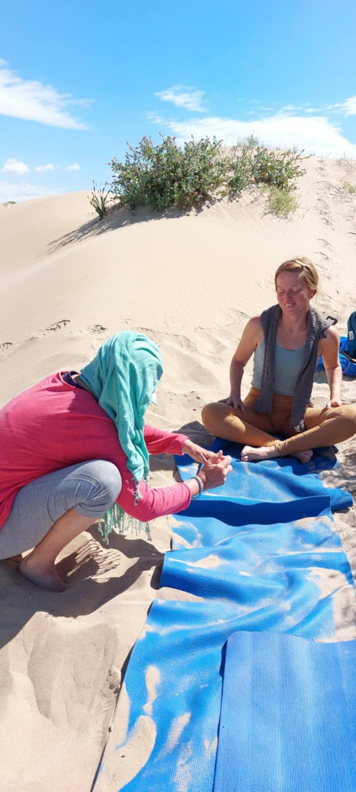
HORARIO PUBLICADO
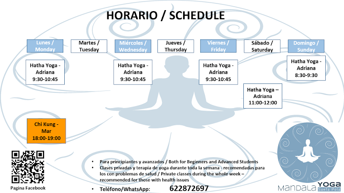
YOGA EN SANTA POLA
Las imágenes compartidas por Mandala Yoga muestran prácticas en la playa y en el estudio. Elige cómo quieres acercarte al movimiento y consulta sus próximas actividades.
Respira. Muévete. Encuentra tu momento.
ANTES DE VENIR
Sí, hay clases para principiantes y para personas con experiencia.
No, proporcionamos esterillas de yoga.
Llama al +34 622 87 26 97 para confirmar el horario y la disponibilidad.
El centro se encuentra en Av. Dama de Elche, 9, 03130 Santa Pola, Alicante.
CONTACTA CON EL CENTRO
Consulta las clases y los horarios actuales, o visita el centro en la dirección indicada.
Llamar al centroPágina de demostración elaborada a partir de material compartido públicamente.¿TIENES UN ESTUDIO DE YOGA?
Esta es una demostración no oficial adaptada para Mandala Yoga Santa Pola. MesterWeb crea páginas personalizadas para profesionales y negocios locales.